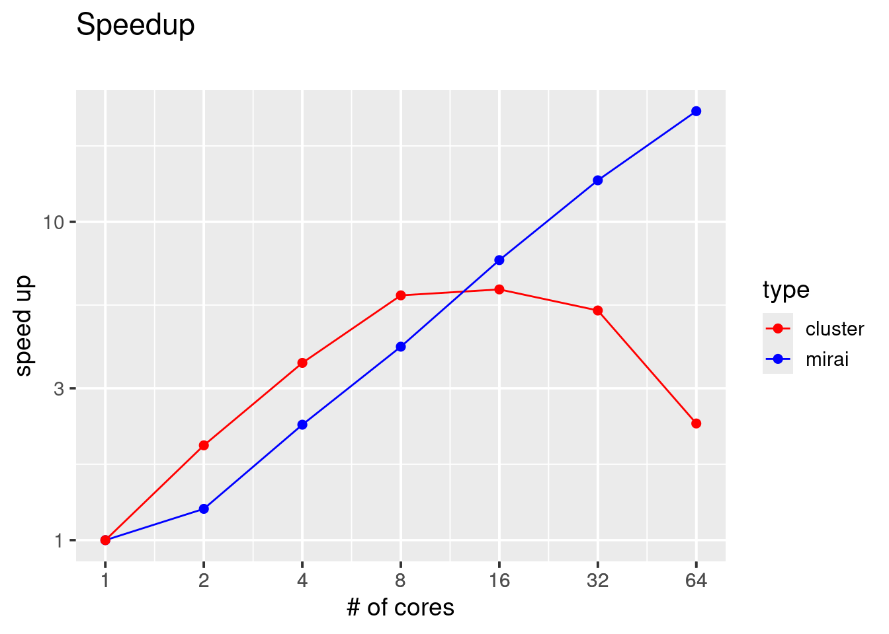
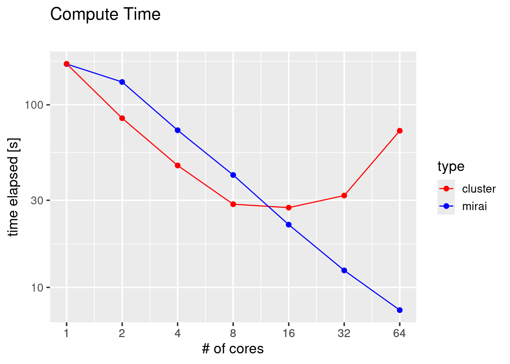
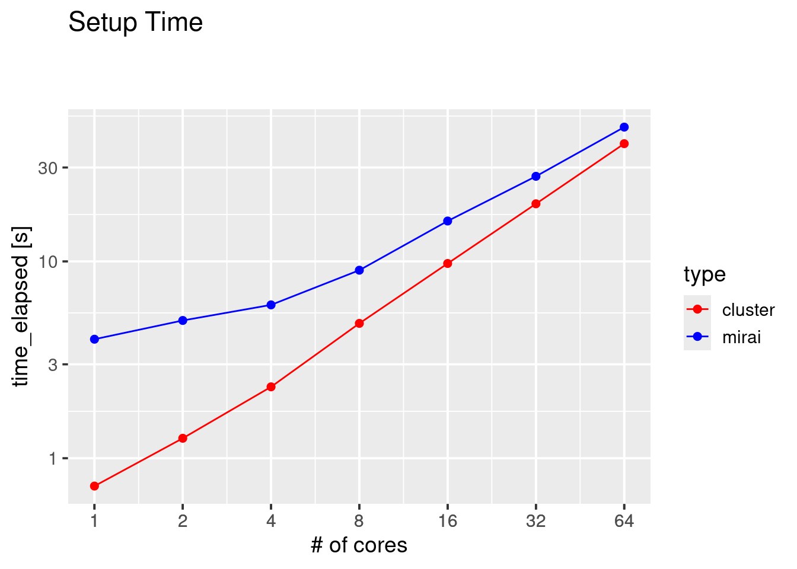

library(future.mirai)
library(mirai)
library(slurmR)
library(furrr)
library(purrr)
library(palmerpenguins)
library(dplyr)
library(tibble)
library(ggplot2)future.mirai vs future.cluster
future.mirai vs. future.cluster
future.mirai is a new backend for the futureverse framework. It uses mirai as a backend. Mirai is using nanonext, the R frontend for NNG, a successor for the zeromq framework (the latter being used in the R package clustermq).
Here we compare the future.mirai backend with the cluster backend. All benchmarks are run on a SLURM based HPC cluster.
For the integration of the cluster backend in the scheduler we use the slurmR package. Due to a missing feature in slurmR, i.e. the ability to specify rscript_startup needed for renv, we are first creating a cluster object using the makeSlurmCluster() function and then use the allocated nodes as workers for the makeClusterPSOCK() call.
Code
Initial setup
First we load all needed packages
Various function definitions
First we define our compute task function
compute_task <- function(n) {
library(palmerpenguins)
library(dplyr)
peng <- penguins %>%
filter(!is.na(species) & !is.na(sex)) %>%
mutate(
species = as.factor(species),
sex = as.factor(sex)
) %>%
sample_n(333)
res<-glm(body_mass_g ~ species + sex, data = peng)
row_numbers <- res$model %>%
mutate(row_num = row_number()) %>%
filter(species == "Chinstrap" & sex == "male") %>%
pull(row_num)
predict(res)[[row_numbers[[1]]]]
}This task is then run samples times in a future_map call
compute <- function(samples) {
system.time(res <- 1:samples |>
future_map(compute_task, .options = furrr_options(
seed = TRUE,
packages = c("palmerpenguins", "dplyr")
)))[3]
}Note in the above the mention of furrr_options seed=TRUE to ensure reproducibilty (random number generation consistency) and the attachment of the two needed packages for the compute_task function.
Since we will likely run within a workbench session, we need to make sure that SLURM CLI commands such as sbatch and srun work and are able to reach outside the current session, for that purpose we clean out all the SLURM environment variables
my_envs<-Sys.getenv()
Sys.unsetenv(
names(
my_envs[
sapply("SLURM",
function(p) grepl(p, names(my_envs), fixed = TRUE)
)
]
)
)Because mirai is an asynchronous framework, for our benchmarking purposes we need to ensure that all workers are online before running any actual computations. For this purposes we need an additional helper function
wait_for_mirai <- function() {
cat("waiting for all mirai workers to be online...")
repeat {
online_stat <- as.data.frame(mirai::status()$daemons)$online
online_workers <- length(online_stat[online_stat == 1])
total_workers <- length(online_stat)
cat(paste(Sys.time()),
" ",
paste(online_workers, "/", total_workers, " online\r"))
Sys.sleep(1)
if (length(unique(online_stat)) == 1 &&
online_stat[1] == "1") {
break
}
}
cat("all workers online")
}Finally we use the above functions to define our two benchmark functions for future.mirai and future.cluster
For future.mirai we can use the remote_config() capability where we can specify our srun command.
benchmark_mirai <- function(cores, samples, memory = 1024) {
# setup mirai daemons against SLURM
daemons(
cores,
url = host_url(ws = TRUE, tls = TRUE),
remote = remote_config(
command = "sbatch",
args = c(paste("--mem", memory), paste0("-J mirai-",cores),
"-p all", "-n 1", "--wrap", "."),
rscript = file.path(R.home("bin"), "Rscript"),
quote = TRUE
),
dispatcher = TRUE
)
# wait until all daemons are active
setup_time <- system.time(wait_for_mirai())[3]
# plan mirai_cluster
plan(mirai_cluster)
# execute computations and return time
compute_time <- compute(samples)
# close all mirai daemons
daemons(0)
return (data.frame(cores, setup_time, compute_time))
}For the cluster backend we use the slurmR package to get a number of cores allocated. Those cores are then used for the future calculation.
benchmark_cluster <- function(cores, samples, cwd, memory = 1024) {
opts_slurmR$set_opts(mem = paste0(memory, "m"), partition = "all")
#allocate compute nodes via slurmR
cl_slurm <- makeSlurmCluster(cores, max_wait = 600)
workers <- sapply(cl_slurm, "[[", 2)
stopCluster(cl_slurm)
setup_time <- system.time(cl <- makeClusterPSOCK(
workers,
rscript_startup = paste0('.libPaths("', .libPaths()[1], '")')
))[3]
# plan cluster future
plan(cluster, workers = cl)
# run computation
compute_time <- compute(samples)
# stop cluster
stopCluster(cl)
return (data.frame(cores, setup_time, compute_time))
}Run the benchmark
First, we run the benchmark on 1 to 64 cores in factors of sqrt(2) increments.
library(purrr)
library(dplyr)
cores <- 2 ** (0:6)
samples <- 25000
df <- map_dfr(cores, function(x) {
memory <- 1024
mirai_time <- benchmark_mirai(x, samples, memory = memory) %>%
mutate(type = "mirai")
cluster_time <- benchmark_cluster(x, samples, memory = memory) %>%
mutate(type = "cluster")
bind_rows(mirai_time, cluster_time)
})
base_time_mirai <- df %>%
filter(type == "mirai", cores == 1) %>%
pluck("compute_time")
base_time_cluster <- df %>%
filter(type == "cluster", cores == 1) %>%
pluck("compute_time")
df <- df %>% mutate(
speedup = if_else(
type == "mirai",
base_time_mirai / compute_time,
base_time_cluster / compute_time
)
)Analyze and plot the results
Finally we plot the results
ggplot(df, aes(x = cores, y = speedup, color = type)) +
geom_line() +
geom_point(size = 2) +
scale_color_manual(values = c("red", "blue")) +
scale_x_log10(breaks = df$cores) +
scale_y_log10() +
labs(x = "# of cores", y = "speed up") +
ggtitle("Speedup", subtitle = "") +
theme_grey(base_size = 14)
ggplot(df, aes(x = cores, y = compute_time, color = type)) +
geom_line() +
geom_point(size = 2) +
scale_color_manual(values = c("red", "blue")) +
scale_x_log10(breaks = df$cores) +
scale_y_log10() +
labs(x = "# of cores", y = "time elapsed [s]") +
ggtitle("Compute Time", subtitle = "") +
theme_grey(base_size = 14)
ggplot(df, aes(x = cores, y = setup_time, color = type)) +
geom_line() +
geom_point(size = 2) +
scale_color_manual(values = c("red", "blue")) +
scale_x_log10(breaks = df$cores) +
scale_y_log10() +
labs(x = "# of cores", y = "time_elapsed [s]") +
ggtitle("Setup Time
", subtitle = "") +
theme_grey(base_size = 14)